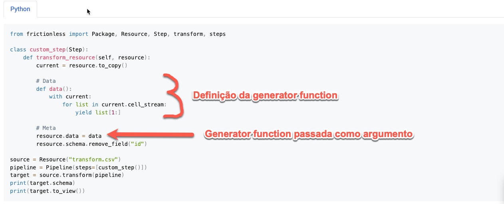

from frictionless import Resource
from rich import print_json
from rich import print as rprint
resource = Resource(name = 'my-resource', path = 'data.csv')
print_json(data = resource.read_rows())[ { "a": 1, "b": 2 }, { "a": 3, "b": 4 } ]
Francisco
July 17, 2023
Usualmente recursos são criados com a propriedade path:
from frictionless import Resource
from rich import print_json
from rich import print as rprint
resource = Resource(name = 'my-resource', path = 'data.csv')
print_json(data = resource.read_rows())[ { "a": 1, "b": 2 }, { "a": 3, "b": 4 } ]
No entanto, eles também podem ser criados com a propriedade data1
data = [
['a', 'b'],
[1, 2],
[3, 4],
]
resource = Resource(name = 'my-resource', data = data)
print_json(data = resource.read_rows())[ { "a": 1, "b": 2 }, { "a": 3, "b": 4 } ]
mas não com as duas
data = [
['a', 'b'],
[1, 2],
[3, 4],
]
resource = Resource(name = 'my-resource', path = 'data.csv', data = data)
rprint(resource.validate())Report( name=None, title=None, description=None, valid=False, stats={'tasks': 1, 'errors': 1, 'warnings': 0, 'seconds': 0.001}, warnings=[], errors=[], tasks=[ ReportTask( name='my-resource', type='table', title=None, description=None, valid=False, place='<memory>', labels=[], stats={'errors': 1, 'warnings': 0, 'seconds': 0.001}, warnings=[], errors=[ ResourceError( message='The data resource has an error: properties "path" and "data" is mutually exclusive', note='properties "path" and "data" is mutually exclusive' ) ] ) ] )
A propriedade data também aceita um generator iterator, mas nesse caso o método resource.read_rows vai seguir o comportamento padrão de iterators2 e na segunda chamada não irá retornar linhas:
data = (row for row in data)
resource = Resource(name = 'my-resource', data = data)
print_json(data = resource.read_rows())[ { "a": 1, "b": 2 }, { "a": 3, "b": 4 } ]
Para evitar a exaustão devemos passar como argumento para a função data um generator. As definições do glossário do Python esclarem a diferença:
generator
A function which returns a generator iterator. It looks like a normal function except that it contains yield expressions for producing a series of values usable in a for-loop or that can be retrieved one at a time with the next() function.
Usually refers to a generator function, but may refer to a generator iterator in some contexts. In cases where the intended meaning isn’t clear, using the full terms avoids ambiguity.
generator iterator
An object created by a generator function.
Each yield temporarily suspends processing, remembering the location execution state (including local variables and pending try-statements). When the generator iterator resumes, it picks up where it left off (in contrast to functions which start fresh on every invocation).
Ou seja, o seguinte exemplo funciona:
[ { "a": 1, "b": 2 }, { "a": 3, "b": 4 } ]
Mas se passarmos o generator iterator data() teremos problemas:
[ { "a": 1, "b": 2 }, { "a": 3, "b": 4 } ]
Esse mesmo comportamento também ocorre durante a criação de custom steps para serem utilizados com o frictionless transform:

De acordo com a especificação:
A resource MUST contain a property describing the location of the
data associated to the resource. The location of resource data MUST be
specified by the presence of one (and only one) of these two properties:
path: for data in files located online or locally on disk.data: for data inline in the descriptor itself.
Cabe ressaltar que além de uma lista de listas também é possível utilizar uma lista de dicionários no argumento data:
↩︎JSON Tabular Data MUST be an
arraywhere each item in the array MUST be:
- EITHER: an array where each entry in the array is the value for that cell in the table
- OR: an object where each key corresponds to the header for that row and the value corresponds to the cell value for that row for that header
Row Arrays
[ [ "A", "B", "C" ], [ 1, 2, 3 ], [ 4, 5, 6 ] ]Row Objects
[ { "A": 1, "B": 2, "C": 3 }, { "A": 4, "B": 5, "C": 6 } ]
Iteradores são consumidos quando você solicita itens deles. Iteradores que foram totalmente consumidos são às vezes chamados de esgotados.↩︎